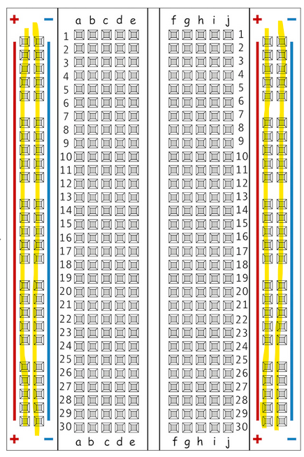
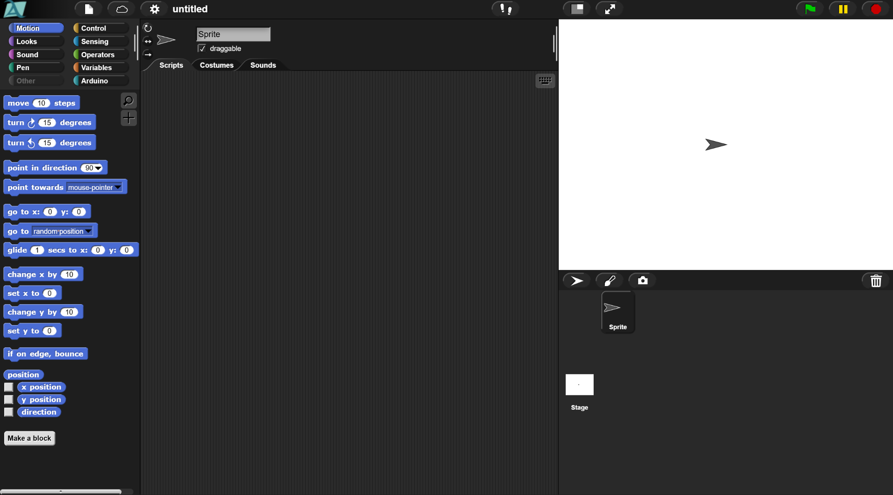
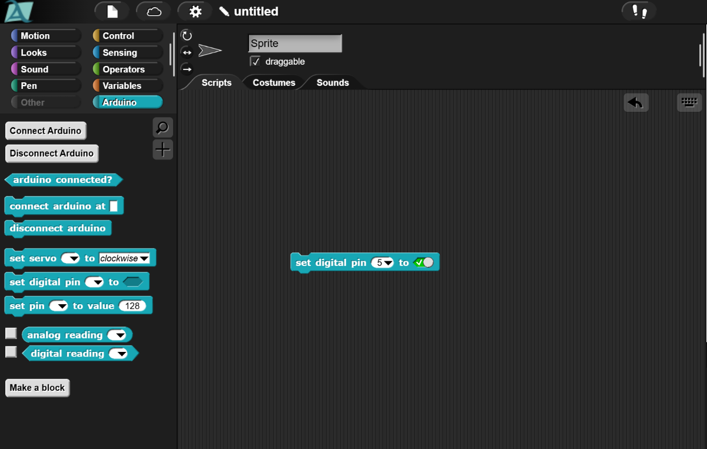
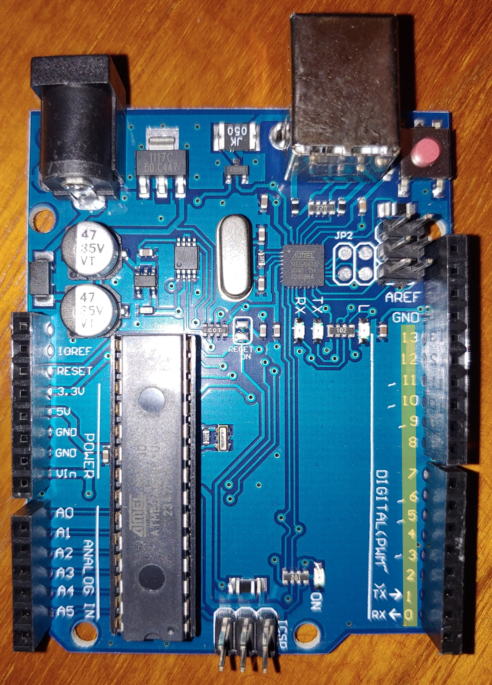

Breadboards

Breadboard: A circuit board made to quickly allow for temporary electrical connections to be made and easily changed to speed up the process of building different circuits.
We will use this to more easily connect different parts of our electronics. The most tricky part that trips up many students is how connections in the breadboard work.
The highlighted columns are the power rails. The red sides with the + are the positive power rails and the blue sides with the - are the negative power rails. These power rails direct power up and down if a wire is inserted into any of the slots. But the electricity will stay in the same column, so if a wire is plugged into the top of the positive power rail on the left side and the bottom of the same positive power rail, electricity will flow from one wire to the next. However, the slots in the middle of the breadboard, work differently.
These slots are referred to by the letter of the column they're in and the number of the row. These slots transmit electricity left and right, but only will not allow electricity to flow across the divide in the middle, or into the power rails. So, for example, if a wire was plugged into A1 electricity would also flow between A1, B1, C1, D1, and E1. Power will not flow into F1 or into the power rail to the left of A1. There will also be no electricity in any other slot in the A, B, C, D, or E columns.

Starting today we are going to program our robots. We use the website snap4arduino.rocks to program our robots. The first thing to look at is the top left corner, notice the ten different labels. These are the labels of the categories of code we can use. The only category we need for now is th "Arduino" category.

Click on the "Arduino" category, then look in the left section. The sets of code changed. Look for "Set Digital Pin _ to _". You can click and drag this into the middle to use it. Click in the white space to type in "5" and click the greyed out space until you see a green checkmark like the above image.

This code when ran, turns on a digital pin on the Arduino, specifically pin 5. The digital pins are along the right side of the Arduino as highlighted above. If you move the wire in last class' circuit from 5V to digital pin 5 and activate the code, you should once again see the LED light up.
Digital pins are pins on the Arduino that can only be controlled through code, to turn sending electricity on or off.